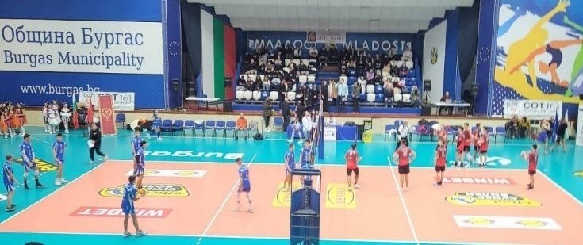
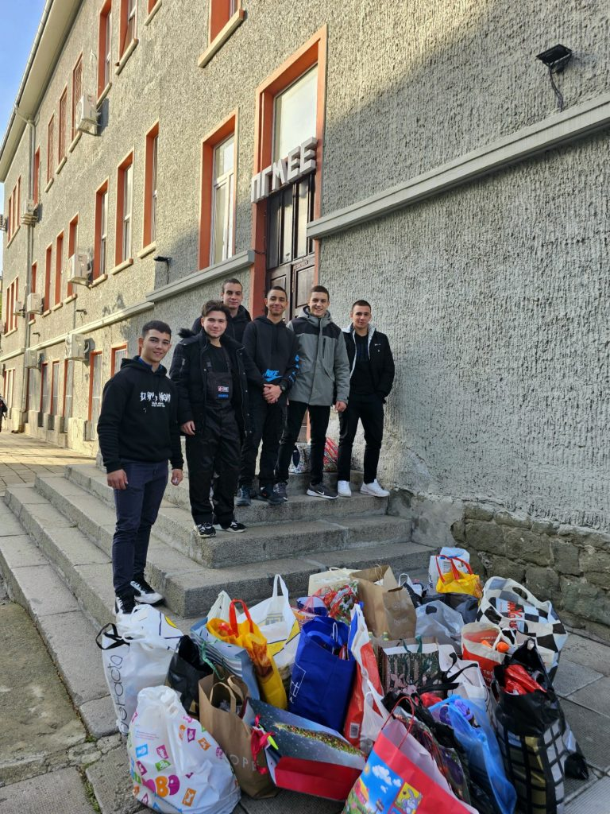
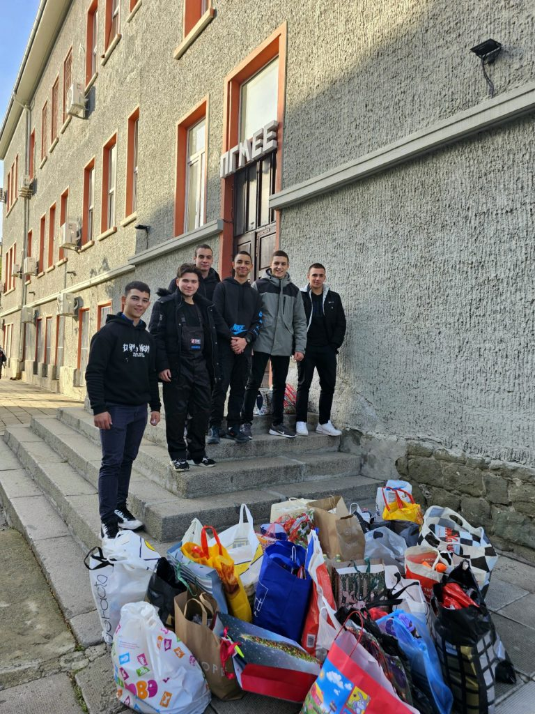

ДАРЕНИЯ ОТ ПГМЕЕ
Кръводаряване Випуск 2023/2024, 2022/2023, 2021/2022, 2019/2020

„Доброто продължава – инициатива училище - село Дебелт“
„Когато сме заедно, можем повече“, това доказаха нашите деветокласници. Всички те, с подкрепата на своите родители и учители, организираха благотворителна инициатива и събраха средства, с които закупиха най-необходимите учебни пособия за своите съученици от ОУ „Антон Страшимиров“ село Дебелт, в което се обучават деца от първи до седми клас.
„Благотворителен волейболен мач“
„Елха на доброто“ 2023/2024; 2023/2023

„Да дариш усмивка“ - За пореден път ученици от ПГМЕЕ показаха най – великата човешка добродетел, а именно – СЪПРИЧАСТНОСТ!
 

Всички осмокласниците на Механото отвориха своите сърца и се включиха в благотворителната кампания на сдружение “Усмивка”. Те вярват, че са успели да зарадват децата и възрастните хора в нужда, като се надяват тази Коледа да е незабравима. Нашите възпитаници дариха усмивки, доброта и надежда….Надежда, че ДОБРОТО РАЖДА ДОБРО!
„Механо – за по-чист свят“


„Нека върнем усмивката на съучениците ни“

Благотворителна акция,организирана от УС на ПГМЕЕ за пострадалите при земетресенията в Турция и Сирия

Посещение на спектакъл „Помниш ли“ на танцова формация „Петлите“

Механото и неговите възпитаници за поредна година доказват съпричастността си към каузата на „Петлите“ – танцова формация, насочена към интеграция, развитие и стимулиране на творческите заложби на деца в неравностойно положение. Ученици от всички класове, заедно с техните преподаватели събраха сумата от 1573 лв.
Помощ за пострадалите от наводнението в Карлово
.jpg)
.jpg)
Благотворителен базар „Единни в многообразието“


Учителите на механото с инициатива „ДА ДАРИМ“
Учителят е признателен и състрадателен! Всеки от нас знае какво дава той и другите, за да подпомогнат борбата на цялото ни общество в борбата с COVID 19 – какво дават лекари, полицаи, пожарникари, учени, лаборанти, доброволци, шивачи… Защото знаем всичко гореспоменато и знаем още колко единен е колектива на Механото за доброволчески каузи, с гордост заявяваме за взетото решение сумата за СБКО за един месец на всички служители на ПГМЕЕ-Бургас да бъде дарена.
„За една детска надежда – Механото и Електрото се съревновават благотворително“

На 28.11.2017г. се проведе хандбален мач с благотворителна цел между отбори на ПГМЕЕ-гр. Бургас и ПГЕЕ “К.Фотинов” на който бяха събрани общо около 1300лв. за Кристин от Бургас, дете страдащо от церебрална парализа.
„С тениска на бала“

Строителният и Механото подават ръка на Станислав.

Музикално забавление за възрастни хора с умствени увреждания


Благотворителен Мартенски базар в ПГМЕЕ
За четвърта година в ПГМЕЕ се организира благотворителен мартенски базар в помощ на социално слаби наши съученици. Инициатор е инж. Т. Пенкова, с класа си – 11 ж., които поставиха началото на мероприятието. Тази година се включиха и ученици от 9и клас, които достойно поеха щафетата. Материалите са закупни със средства на учениците, като при оформянето им са помогнали и родителите. Браво на ентусиастите!
Благотворителен Коледен Базар в ПГМЕЕ
Kлуб ‘’Млад дизайнер’’ ПГМЕЕ с ръководител Зл.Тренчева организираха благотворителен Коледен базар. Учениците бяха изработили декоративни картички, сувенири и коледни украшения.

Пейка за Природозащитен център "Пода"